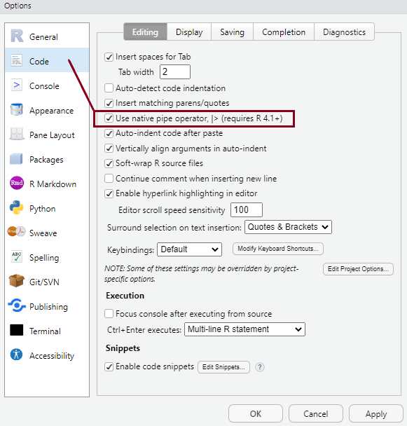
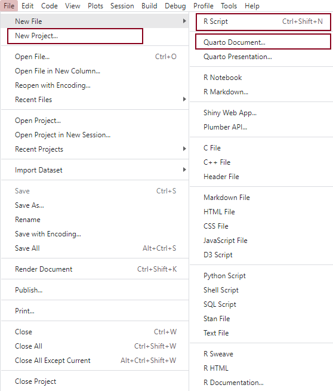

Week 1 Computer Lab Worksheet
Introduction to R, RStudio and Quarto
Aims
This lab is an introduction to R and RStudio for the purposes of this module. It is expected that those new to R will complete the R for Social Scientists online training course on their own (estimated to take around 5-6 hours), as well as read through the assigned chapters from the R4DS textbook. The aims of this session are more limited than the contents of those resources, while at the same time offering something additional to those already familiar with basic operations in R.
By the end of the session, you will:
- understand how to use the most important panels in the RStudio interface
- create an RStudio Project to store your work throughout the course
- begin using R scripts (.R) and Quarto notebooks (.qmd) to record and document your coding progress
- understand data types and basic operations in the
Rlanguage - understand the principles behind functions
- know how to install, load and use functions from user-written packages
- gain familiarity with some useful functions from packages included in the tidyverse ecosystem
R and RStudio
If you are working on university desktops in the IT labs, recent versions of both R and RStudio will already be installed. To install them on your personal computers, follow the steps outlined here based on your operating system.
Although you will likely only interact directly with RStudio, R needs to be installed first. Think of the relationship between the two as that between the engine of a car (R) and the dashboard of a car (RStudio); or, imagine driving this (R) versus this (RStudio).
{kind=link}
{kind=link}
Your first task is to take RStudio for a spin and get to know some of its more commonly used panes. The four main panes are:

The R Console Pane
The R Console, by default the left or lower-left pane in R Studio, is the home of the R “engine”. This is where the commands are actually run and non-graphic outputs and error/warning messages appear. The Console is the direct interface to the R software itself; it’s what we get if instead of RStudio we open the R software: a direct interface to the R programming language, where we can type commands and where results/messages are printed.
You can directly enter and run commands in the R Console, but realize that these commands are not saved as they are when running commands from a script. For this reason, we should not use the Console pane directly too much. For typing commands that we want R to execute, we should instead use an R script file, where everything we type can be saved for later and complex analyses can be built up.
The Source Pane
This pane, by default in the upper-left, is a space to work with scripts and other text files. This pane is also where datasets (data frames) open up for viewing.
Note
If your RStudio displays only one pane on the left, it is because you have no scripts open yet. We can open an existing one or create a new one. We’ ll do that a bit later.
The Environment Pane
This pane, by default in the upper-right, is most often used to see brief summaries of “objects” that are available in an active session. Datasets loaded for analysis would appear here
Note
If your Environment is empty, it means that you don’t have any “objects” loaded or created yet. We will be creating some objects later and we will also import an example dataset.
Files, Plots, Packages, Help, etc. The lower-right pane includes several tabs including plots (display of graphics including maps), help, a file library, and available R packages (including installation/update options).
Tip
You can arrange the panes in various ways, depending on your preferences, using Tools > Global Options in the top menu. So the arrangement of panes may look different on different computers.
General settings
You can personalise the look and feel of your RStudio setup in various ways using Tools > Global Options from the top menu, but setting some options as default from the very start is highly recommended. You can see these in the pictures below:


- The most important setting in the picture on the left is the one to restore .RData at startup and saving the workspace as .RData on exit. Make sure these are un-ticked and set to ‘Never’, respectively, as shown in the picture. It’s always safer to start each RStudio session in a clean state, without anything automatically pre-loaded from a previos session. That could lead to serious and hard to trace complications.
- In the picture on the right, you have the option to select that the new native pipe operator (we’ll talk about it later!) be inserted using the
Ctrl+Shift+Mkeyboard shortcut instead of the older version of the pipe (|>).
These settings will make more sense later, but it’s a good idea to have them sorted at the very beginning.
Task 1: Use R as a simple calculator
The most elementary yet still handy task you can use R for is to perform basic arithmetic operations. This is useful for getting a first experience doing things in the R language. Let’s have a look at a few operations using the Console directly. Let’s say we want to know the result of adding up three numbers: 1, 3 and 5. In the Console pane, type the command below and then click Enter:
This will print out the result (9) in the Console:
[1] 9The [1] in the result is just the line number; in this case, our result only consists of a single line.
We can also save the result of this operation as an object, so we can use it for further operations. We create objects by using the so-called assignment operator consisting of the characters <-. A command involving <- can be read as “assign the value of the result from the operation on the right hand side (some expression) to the object on the left hand side (short name of object, single word, with no spaces)”. For example, let’s save our result in an object called “nine”:
Notice that there is no output printed in the Console this time. But there are also no error messages, so the operation must have run without problems. Instead, if we look at the Environment pane, we notice that it is no longer empty, but contains an object called “nine” that stores the value “9” in it. We can now use this object for other operations, such as:
We see the results of these operations printed out in the Console.
We can also check results of so-called relational operations. There are several relational operators that allow us to compare objects in R. The most useful of these are the following:
-
>greater than,>=greater than or equal to -
<less than,<=less than or equal to -
==equal to -
!=not equal to
When we use these to compare two objects in R, we end us with a logical object.
For example, let’s check whether 9 is greater than 5, and whether it is lower than 8:
R treats our inputs as statements that we are asking it to evaluate, and we get the answers “TRUE” and “FALSE”, respectively, as we would expect. Let’s now check whether our object “nine” is equal to the number 9. We may assume that we can achieve this by typing “nine = 9”, but let’s see what that results in:
Did we get the result we expected? Nothing was printed in the output, so seemingly nothing happened… That’s because the “=” sign is also used as an assignment operator in R, just like “<-”. So we basically assigned the value “9” to the object “nine” again. To use the equal sign as a logical operator we must type it twice (==). Let’s see:
Now we get the answer “TRUE”, as expected.
This distinction between “=” and “==” is important to keep in mind. What would have happened if we had tried to test whether our object “nine” equals value “5” or not, and instead of the logical operator (==) we used the assignment operator (=)? Let’s see:
In the Console we again see no results printed, but if we check our Environment, we see that the value of the object “nine” was changed to 5. So it can be a dangerous business. We’ll be using the “<-” as assignment operator instead of “=” to avoid any confusion in this respect. The distinction between == and = will also emerge in other contexts later.
So, try out the following commands in turn now and check if the results are what you’d expect:
[1] FALSE[1] TRUE[1] FALSE[1] TRUE[1] TRUEThe text following the hashtag (#) in the last line is a comment. If you’d like to comment on any code you write just add a hash (#) or series of hashes in front of it so that R knows it should not evaluate it as a command. This will be useful when writing your commands in an R script that you can save for later, rather than interacting with R live in the Console.
Scripts, markdown documents and projects
Before learning to do more with R, let’s learn about some further file types and complete our RStudio setup. Writing brief commands that you want to test out in the Console is okay, but what you really want is to save your commands as part of a workflow in a dedicated file that you can reuse, extend and share with others. In every quantitative analysis, we need to ensure that each step in our analysis is traceable and reproducible. This is increasingly a professional standard expected of all data analysts in the social sciences. This means that we need to have an efficient way in which to share our analysis code, as well as our outputs and interpretations of our findings. RStudio has an efficient way of handling this requirement with the use of R script files and versions of the Markdown markup language that allow the efficient combining of plain text (as in the main body of an article) with analysis code and outputs produced in R. The table below lists the main characteristics of these file types:
| Format | Extension | Description |
|---|---|---|
| R Script | .R | Use an R script if you want to document a large amount of code used for a particular analysis project. Scripts should contain working R commands and human-readable comments explaining the code. Commands can be run line-by-line, or the whole R script can be run at once. For example, one can write an R script containing a few hundred or thousands of lines of code that gathers and prepares raw, unruly data for analysis; if this script can run without any errors, then it can be saved and sourced from within another script that contains code that undertakes the analysis using the cleansed dataset. Comments can be added by appending them with a hashtag (#). |
| R Markdown | .Rmd |
Markdown is a simple markup language that allows the formatting of plain text documents. R Markdown is a version of this language written by the R Studio team, which also allows for R code to be included. Plain text documents having the .Rmd extension and containing R Markdown-specific code can be “knitted” (exported) directly into published output document formats such as HTML, PDF or Microsoft Word, which contain both normal text as well as tables and charts produced with the embedded R code. The code itself can also be printed to the output documents. |
| Quarto document | .qmd | Quarto is a newer version of R Markdown which allows better compatibility with other programming languages. It is a broader ecosystem design for academic publishing and communication (for example, the course website was built using quarto), but you will be using only Quarto documents in this module. There isn’t much difference between .Rmd and .qmd documents for their uses-cases on this module, so one could easily change and .Rmd extension to .qmd and still produce the same output. .qmd documents are “rendered” instead of “knitted”, but for RStudio users the underlying engine doing the conversion from Quarto/R Markdown to standard Markdown to output file (HTML, PDF, Word, etc.) is the same. Read more about Quarto document in the TSD textbook. |
Creating new files can be done easily via the options File > New File > from the top RStudio menu.
The best way to use these files are as part of R project folders, which allow for cross-references to documents and datasets to be made relative to the path of the project folder root. This makes sure that no absolute paths to files (i.e. things like “C:/Documents/Chris/my_article/data_files/my_dataset.rds”) need to be used (instead, you would write something like “~/data_files/my_dataset.rds” if the “my_article” folder was set up as an R Project). This allows for the same code file to be run on another computer too without an error, ensuring a minimal expected level of reproducibility in your workflow.
Setting up an existing or a new folder as an R Project involves having a file with the extension .RProj saved in it. This can be done easily via the options File > New Project from the top RStudio menu.

Task 2: Set up a new R Project, with an .R script and a .qmd document included:
- Create a new folder set up as an R project; call the folder “HSS8005_labs”; when done, you should have an empty folder with a file called “HSS8005_labs.Rproj” in it
- Create a new R script (
.R); once created, save it as “Lab_1.R” within the “HSS8005_labs” folder - Create a new Quarto document (
.qmd); once created, save it as “Lab_1.qmd” within the “HSS8005_labs” folder
You will work in each of these new documents in this lab to gain experience with them.
Data types and structures
The basic elements of data in R are called vectors. The objects that we have in the Environment, the ones we created in Task 1 are simple numeric vectors of length 1. R has 6 basic data types that you should be aware of:
- character: a text string, e.g. “name”
- numeric: a real or decimal number
- integer: non-decimal number; often represented by a number followed by the letter “L”, e.g. 5L
- logical: TRUE or FALSE
- complex: complex numbers with real and imaginary parts
R provides several functions to examine features of vectors and other objects, for example:
- class() - what kind of object is it (high-level)?
- typeof() - what is the object’s data type (low-level)?
- length() - how long is it? What about two dimensional objects?
- attributes() - does it have any metadata?
Task 3: Vector operations in the R script
Let’s learn a few vector operations. Type/copy the code below to the R script file we created earlier, and save it at the end for your records.
First, let’s use the c() function to concatenate vector elements:
To run this line of code in an R script, place the cursor on the line you want to execute and either click on the small “Run” tab in the upper-right corner of the script’s task bar, or click Ctrl+Enter (on Windows PCs).
The vector called x that we just created appears in the Environment. We can examine some of its features:
These tell us something about the characteristics of the object, but not much about its content (apart from the fact that it has a length of 5). Functions such as min, max, range, mean, median, sum or summary give us some summary statistics about the object:
[1] 1.2[1] 20.1[1] 1.2 20.1[1] 7.04[1] 5.5[1] 35.2 Min. 1st Qu. Median Mean 3rd Qu. Max.
1.20 2.20 5.50 7.04 6.20 20.10 The seq() function lets us create a sequence from a starting point to an ending point. If you specify the by argument, you can skip values. For instance, if we wanted a vector of every 5th number between 0 and 100, we could write:
To print out the result in the console, we can simply type the name of the object:
A shorthand version to get a sequence between two numbers counting by 1s is to use the : sign. For example, print out all the numbers between 200 and 250:
[1] 200 201 202 203 204 205 206 207 208 209 210 211 212 213 214 215 216 217 218
[20] 219 220 221 222 223 224 225 226 227 228 229 230 231 232 233 234 235 236 237
[39] 238 239 240 241 242 243 244 245 246 247 248 249 250To access a single element of a vector by position in the vector, use the square brackets []:
If you want to access more than one element of a vector, put a vector of the positions you want to access in the brackets:
If you try to access an element past the length of the vector, it will return a missing value NA:
If you accidentally subset a vector by NA (the missing value), you get the vector back with all its entries replaced by NA:
Let’s say you want to modify one value in your vector. You can combine the square bracket subset [] with the assignment operator <- to replace a particular value:
You can replace multiple values at the same time by using a vector for subsetting:
If the replacement vector (the right-hand side) is shorter than what you are assigning to (the left-hand side), the values will “recycle” or repeat as necessary:
You can also create a vector of characters (words, letters, punctuation, etc):
Note for vectors, you cannot mix characters and numbers in the same vector. If you add a single character element, the whole vector gets converted.
[1] 1.2 2.4 1.2 2.4 20.1[1] "1.2" "2.4" "1.2" "2.4" "20.1" "hey" Logical vectors are just vectors that only contain the special R values TRUE or FALSE.
You could but never should shorten TRUE to T and FALSE to F. It’s easy for this shortening to go wrong so better just to spell out the full word. Also not that this is case-sensitive, and this will produce an error:
Data frames
It is useful to know about vectors, but we will use them primarily as part of larger data frames. Data frames are objects that contain several vectors of similar length. In a data frame each column is a variable and each row is a case. They look like spreadsheets containing data. There are several toy data frames built into R, and we can have a look at one to see how it looks like. For example, the cars data frame is built into R and so you can access it without loading any files. To get the dimensions, you can use dim(), nrow(), and ncol().
We can also load the dataset into our Environment and look at it manually:
The new object has appeared in the Environment under a new section called Data. We can click on it and the dataset will open up in the Source pane. What do you think this dataset is about?
You can select each column/variable from the data frame use the $, turning it into a vector:
[1] 2.620 2.875 2.320 3.215 3.440 3.460 3.570 3.190 3.150 3.440 3.440 4.070
[13] 3.730 3.780 5.250 5.424 5.345 2.200 1.615 1.835 2.465 3.520 3.435 3.840
[25] 3.845 1.935 2.140 1.513 3.170 2.770 3.570 2.780You can now treat this just like a vector, with the subsets and all.
We can subset to the first/last k rows of a data frame
mpg cyl disp hp drat wt qsec vs am gear carb
Mazda RX4 21.0 6 160 110 3.90 2.620 16.46 0 1 4 4
Mazda RX4 Wag 21.0 6 160 110 3.90 2.875 17.02 0 1 4 4
Datsun 710 22.8 4 108 93 3.85 2.320 18.61 1 1 4 1
Hornet 4 Drive 21.4 6 258 110 3.08 3.215 19.44 1 0 3 1
Hornet Sportabout 18.7 8 360 175 3.15 3.440 17.02 0 0 3 2
Valiant 18.1 6 225 105 2.76 3.460 20.22 1 0 3 1 mpg cyl disp hp drat wt qsec vs am gear carb
Porsche 914-2 26.0 4 120.3 91 4.43 2.140 16.7 0 1 5 2
Lotus Europa 30.4 4 95.1 113 3.77 1.513 16.9 1 1 5 2
Ford Pantera L 15.8 8 351.0 264 4.22 3.170 14.5 0 1 5 4
Ferrari Dino 19.7 6 145.0 175 3.62 2.770 15.5 0 1 5 6
Maserati Bora 15.0 8 301.0 335 3.54 3.570 14.6 0 1 5 8
Volvo 142E 21.4 4 121.0 109 4.11 2.780 18.6 1 1 4 2There are various ways in which one can further subset and wrangle vectors and data frames using base R functions, but the tidyverse and other user-written packages provide more functionality and ease of use. In this course, we will rely mostly on these.
Functions
We have already encountered some basic functions earlier. Most of the work in R is done using functions. It’s possible to create your own functions. This makes R extremely powerful and extendible. We’re not going to cover making your own functions in this course, but it’s important to be aware of this capability. There are plenty of good resources online for learning how to do this, including this one.
Advanced user exercise: leap year functions
If you have more advanced knowledge of R, here’s and exercise for you. Suppose you want to write a function that lists all the leap years between two specified years. How would you go about writing it? What are the information that you need first? What are the steps that you would take to build up the function? There are several ways of achieving such a function, and you can find three options at the bottom of this worksheet. Work individually or in a small group. Compare your results to the options given at the end.
Packages
Instead of programming your own functions in the R language, you can rely on functions written by other people and bundled within a package that performs some set task. There are a large number of reliable, tested and oft-used packages containing functions that are particularly useful for social scientists.
Some particularly useful packages: - the tidyverse bundle of packages, which includes the dplyr package (for data manipulation) and additional R packages for reading in (readr), transforming (tidyr) and visualizing (ggplot2) datasets. - to import datasets in non-native formats and to manage attached labels (a concept familiar from other statistical packages but foreign to R), load the sjlabelled package (an alternative to haven and labelled, which work in a similar way but provide less functionality) - the sjmisc package contains very useful functions for undertaking data transformations on labelled variables (recoding, grouping, missing values, etc); also has some useful tabulation functions - the sjPlot package contains functions for graphing and tabulating results from regression models
Packages are often available from the Comprehensive R Archive Network (CRAN) or private repositories such as Bioconductor, GitHub etc. Packages made available on CRAN can be installed using the command install.packages("packagename"). Once the package/library is installed (i.e. it is sitting somewhere on your computer), we then need to load it to the current R session using the command library(packagename).
So using a package/library is a two-stage process. We:
- Install the package/library onto your computer (from the internet)
- Load the package/library into your current session using the library command.
Let’s start by installing the ‘tidyverse’ package, and then load it:
You can check the suite of packages that are loaded when you load the Tidyverse library using a command from the tidyverse itself:
Question
Why do you think we got an error message when we tried to run the above command?
Because tidyverse_packages() is itself a function from the tidyverse, in order to use that function we need not only to install the tidyverse but also to make its functions available. In other words, we did not yet load the tidyverse for use in our R session, we only just installed it on our computers.
If we don’t want to load a package that we have downloaded - because maybe we only want to use a single function once and we don’t want to burden our computer’s memory, we can state explicitly which package the function is from in the following way:
But in many cases we do want to use several functions at various points in an analysis session, so it is usually useful to load the entire package or set of packages:
Now we can use functions from that package without having to explicitly state the name of the package. We can still state the name explicitly, and that may be useful for readers of our code to understand what package a function come from. Also, it may happen that different packages have similarly named functions, and if all those packages are loaded, then the functions from a package loaded later will override that in the package loaded earlier. R will note in a comment whether any functions from a package are masked by another, so it’s worth paying attention to the comments and warnings printed by R when we load packages.
There are also convenience tools - e.g. the pacman package - that make it easier to load several packages at once, while at the same time downloading the package if it has not yet been downloaded on our computer.
For example, we can download a number of packages with the command below:
Loading required package: pacman# Then load/install other packages using 'pacman':
pacman::p_load(
tidyverse, # general data management tools ('dplyr', etc.)
sjlabelled, # data import from other software (alternative to 'haven') and labels management
sjmisc # data transformation on variables (recoding,grouping, missing values, etc)
)About the Tidyverse
Data frames and ‘tibbles’
The Tidyverse is built around the basic concept that data in a table should have one observation per row, one variable per column, and only one value per cell. Once data is in this ‘tidy’ format, it can be transformed, visualized and modelled for an analysis.
When using functions in the Tidyverse ecosystem, most data is returned as a tibble object. Tibbles are very similar to the data.frames (which are the basic types of object storing datasets in base R) and it is perfectly fine to use Tidyverse functions on a data.frame object. Just be aware that in most cases, the Tidyverse function will transform your data into a tibble. If you are unobservant, you won’t even notice a difference. However, there are a few differences between the two data types, most of which are just designed to make your life easier. For more info, check R4DS.
Selected dplyr functions
The dplyr package is designed to make it easier to manipulate flat (2-D) data (i.e. the type of datasets we are most likely to use, which are laid out as in a standard spreadsheet, with rows referring to cases (observations; respondents) and columns referring to variables. dplyr provides simple “verbs”, functions that correspond to the most common data manipulation tasks, to help you translate your thoughts into code. Here are some of the most common functions in dplyr:
-
filter()chooses rows based on column values. -
arrange()changes the order of the rows. -
select()changes whether or not a column is included. -
rename()changes the name of columns. -
mutate()/transmute()changes the values of columns and creates new columns (variables) -
summarise()compute statistical summaries (e.g., computing the mean or the sum) -
group_by()group data into rows with the same values -
ungroup()remove grouping information from data frame. -
distinct()remove duplicate rows.
All these functions work similarly as follows:
- The first argument is a data frame/tibble
- The subsequent arguments are comma separated list of unquoted variable names and the specification of what you want to do
- The result is a new data frame
For more info, check R for Social Scientists
The forward-pipe (%>%/|>) workflow
All of the dplyr functions take a data frame or tibble as the first argument. Rather than forcing the user to either save intermediate objects or nest functions, dplyr provides the forward-pipe operator %>% from the magrittr package. This operator allows us to combine multiple operations into a single sequential chain of actions. As of R 4.1.0 there is also a native pipe operator in R (|>), and in RStudio one can set the shortcut to paste the new pipe operator instead (as we have done at the beginning of the lab). Going forward, we’ll use this version of the pipe operator for simplicity, but it’s likely that you will encounter the older version of the operator too in various scripts.
Let’s start with a hypothetical example. Say you would like to perform a sequence of operations on data frame x using hypothetical functions f(), g(), and h():
- Take x then
- Use x as an input to a function f() then
- Use the output of f(x) as an input to a function g() then
- Use the output of g(f(x)) as an input to a function h()
One way to achieve this sequence of operations is by using nesting parentheses as follows:
h(g(f(x)))This code isn’t so hard to read since we are applying only three functions: f(), then g(), then h() and each of the functions is short in its name. Further, each of these functions also only has one argument. However, you can imagine that this will get progressively harder to read as the number of functions applied in your sequence increases and the arguments in each function increase as well. This is where the pipe operator |> comes in handy. |> takes the output of one function and then “pipes” it to be the input of the next function. Furthermore, a helpful trick is to read |> as “then” or “and then.” For example, you can obtain the same output as the hypothetical sequence of functions as follows:
x |>
f() |>
g() |>
h()You would read this sequence as:
- Take x then
- Use this output as the input to the next function f() then
- Use this output as the input to the next function g() then
- Use this output as the input to the next function h()
So while both approaches achieve the same goal, the latter is much more human-readable because you can clearly read the sequence of operations line-by-line. Instead of typing out the three strange characters of the operator, one can use the keyboard shortcut Ctrl + Shift + M (Windows) or Cmd + Shift + M (MacOS) to paste the operator.
Task 4: Data frame operations in a Quarto document
In this task, let’s start using the other document we created, the .qmd file. This file format allows you to combine both longer written text (such as detailed descriptions of your data analysis process or the main body of a report or journal article) with code chunks. To get you started using this file format, read Chapter 3.2. in TSD. Below we will focus only on the code chunks.
Compared to what you have done in the R script, in the main Quarto document a # refers to a heading level rather than a comment. If you want to include a code chunk, you can click on the +C tab in the upper-right corner of the .qmd document’s toolbar, or use the keyboard shortcut Ctrl+Alt+i. In the code chunk you would write in the same way as you did in the R script (they are basically mini-scripts). Within a code-chunk, therefore, the # still refers to a comment.
To execute a command withing a code chunk, you can either run each line/selection separately using Ctrl+Enter as in the R script, or you can run the entire content of the chunk with the green right-pointing triangle-arrow in the upper-right corner of the chunk.
Let’s continue doing some operations on the mtcars dataset we looked at earlier, this time using some useful tidyverse functions.
Let’s subset the data frame by selecting certain rows or columns. In tidyverse, you can do this with the filter() function for selecting rows and the select() function for selecting columns. Here we pipe the selections into head() to show the first few rows. You could also use the dplyr::slice_head function
mpg wt
Mazda RX4 21.0 2.620
Mazda RX4 Wag 21.0 2.875
Datsun 710 22.8 2.320
Hornet 4 Drive 21.4 3.215
Hornet Sportabout 18.7 3.440
Valiant 18.1 3.460To select the cars with eight cylinders:
mpg cyl disp hp drat wt qsec vs am gear carb
Hornet Sportabout 18.7 8 360.0 175 3.15 3.440 17.02 0 0 3 2
Duster 360 14.3 8 360.0 245 3.21 3.570 15.84 0 0 3 4
Merc 450SE 16.4 8 275.8 180 3.07 4.070 17.40 0 0 3 3
Merc 450SL 17.3 8 275.8 180 3.07 3.730 17.60 0 0 3 3
Merc 450SLC 15.2 8 275.8 180 3.07 3.780 18.00 0 0 3 3
Cadillac Fleetwood 10.4 8 472.0 205 2.93 5.250 17.98 0 0 3 4
Lincoln Continental 10.4 8 460.0 215 3.00 5.424 17.82 0 0 3 4
Chrysler Imperial 14.7 8 440.0 230 3.23 5.345 17.42 0 0 3 4
Dodge Challenger 15.5 8 318.0 150 2.76 3.520 16.87 0 0 3 2
AMC Javelin 15.2 8 304.0 150 3.15 3.435 17.30 0 0 3 2
Camaro Z28 13.3 8 350.0 245 3.73 3.840 15.41 0 0 3 4
Pontiac Firebird 19.2 8 400.0 175 3.08 3.845 17.05 0 0 3 2
Ford Pantera L 15.8 8 351.0 264 4.22 3.170 14.50 0 1 5 4
Maserati Bora 15.0 8 301.0 335 3.54 3.570 14.60 0 1 5 8We can use the slice() function. For example, to get the 5th through 10th rows:
mpg cyl disp hp drat wt qsec vs am gear carb
Hornet Sportabout 18.7 8 360.0 175 3.15 3.44 17.02 0 0 3 2
Valiant 18.1 6 225.0 105 2.76 3.46 20.22 1 0 3 1
Duster 360 14.3 8 360.0 245 3.21 3.57 15.84 0 0 3 4
Merc 240D 24.4 4 146.7 62 3.69 3.19 20.00 1 0 4 2
Merc 230 22.8 4 140.8 95 3.92 3.15 22.90 1 0 4 2
Merc 280 19.2 6 167.6 123 3.92 3.44 18.30 1 0 4 4If we pass a vector of integers to the select function, we will get the variables corresponding to those column positions. So to get the first through third columns:
mpg cyl disp
Mazda RX4 21.0 6 160
Mazda RX4 Wag 21.0 6 160
Datsun 710 22.8 4 108
Hornet 4 Drive 21.4 6 258
Hornet Sportabout 18.7 8 360
Valiant 18.1 6 225If you call summary() a data frame, it produces applies the vector version of the summary command to each column:
mpg cyl disp hp
Min. :10.40 Min. :4.000 Min. : 71.1 Min. : 52.0
1st Qu.:15.43 1st Qu.:4.000 1st Qu.:120.8 1st Qu.: 96.5
Median :19.20 Median :6.000 Median :196.3 Median :123.0
Mean :20.09 Mean :6.188 Mean :230.7 Mean :146.7
3rd Qu.:22.80 3rd Qu.:8.000 3rd Qu.:326.0 3rd Qu.:180.0
Max. :33.90 Max. :8.000 Max. :472.0 Max. :335.0
drat wt qsec vs
Min. :2.760 Min. :1.513 Min. :14.50 Min. :0.0000
1st Qu.:3.080 1st Qu.:2.581 1st Qu.:16.89 1st Qu.:0.0000
Median :3.695 Median :3.325 Median :17.71 Median :0.0000
Mean :3.597 Mean :3.217 Mean :17.85 Mean :0.4375
3rd Qu.:3.920 3rd Qu.:3.610 3rd Qu.:18.90 3rd Qu.:1.0000
Max. :4.930 Max. :5.424 Max. :22.90 Max. :1.0000
am gear carb
Min. :0.0000 Min. :3.000 Min. :1.000
1st Qu.:0.0000 1st Qu.:3.000 1st Qu.:2.000
Median :0.0000 Median :4.000 Median :2.000
Mean :0.4062 Mean :3.688 Mean :2.812
3rd Qu.:1.0000 3rd Qu.:4.000 3rd Qu.:4.000
Max. :1.0000 Max. :5.000 Max. :8.000 These few tasks should be enough to get you started with R and RStudio. If you haven’t yet done so, complete the R for Social Scientists online training too sometime over the next week. From next week we will begin working actively with real data and address specific data management challenges that arise from there.
Those of you who have worked on the advanced user exercise can check some optional solutions below.
Solutions to the advanced exercise: leap year functions
leap_year_v1 <- function(year1,year2) {
year <- year1:year2
year[(year%%4==0 & year%%100!=0) | year%%400==0]
}
leap_year_v2 <- function(year1,year2){
vector<-c()
for(year in year1:year2){
if((year %% 4 == 0) & (year %% 100 != 0) | (year %% 400 == 0)){
vector<-c(vector,year)
}}
return(vector)}
leap_year_v3 <- function(year1,year2){
#make a vector of all years
year<-year1:year2
#find the leap years (TRUE/FALSE)
leaps<-ifelse((year %% 4 == 0) & (year %% 100 != 0) | (year %% 400 == 0), TRUE, FALSE)
year[leaps] #return the leap years
}